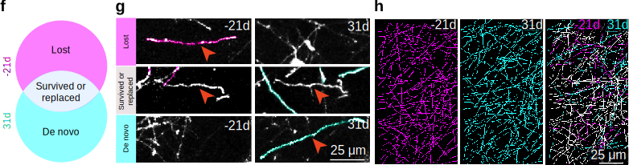
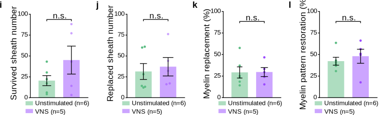

Figure 2 VNS Alone Does Not Affect Sheath Replacement/Patterns#
Panels A & B: Categorizing Myelin Regeneration#
Quality over Quantity. While Figure 1 established that VNS increases the amount of regeneration, Figure 2 asks whether it restores the original pattern of myelination.

Methodological Context: Sheath Classification
To determine if VNS guides repair to the correct locations, we utilized high-resolution longitudinal tracing to categorize every new myelin sheath (Fig. 2b):
To determine if VNS guides repair to the correct locations, we utilized high-resolution longitudinal tracing to categorize every new myelin sheath (Fig. 2b):
- "New" (De Novo): Sheaths generated in locations that were previously unmyelinated. This represents a change in the circuit topology.
- "Replaced" (Restored): Sheaths generated in locations that were previously myelinated and subsequently lost during cuprizone treatment. This represents true repair of the original circuit map.
- The Biological Question: Does VNS specifically enhance the restoration of the original map ("Replaced"), or does it simply drive broad, non-specific myelination ("New")?
Panel C – E: OL Morphology & Targeting#

Show code cell source
import pandas as pd
from IPython.display import display, HTML
# Formatting function
def pretty_print_stats(df, title):
print(f"\n{title}")
display(HTML(df.to_html(index=False, classes='table table-striped table-hover', justify='left')))
# --- PANELS C, D, E DATA (Cellular Morphology & Targeting) ---
data_morph = {
"Metric": [
"Sheath Number per Oligodendrocyte (Fig. 2C)",
"Average Sheath Length (Fig. 2D)",
"% Sheath Replacement (Targeting Accuracy) (Fig. 2E)"
],
"VNS Mean ± SEM": [
"50.17 ± 2.67",
"56.87 ± 3.28 µm",
"20.71 ± 3.11 %"
],
"Control Mean ± SEM": [
"44.47 ± 2.88",
"63.02 ± 3.11 µm",
"30.84 ± 5.20 %"
],
"Statistical Test": [
"Two-tailed t-test",
"Two-tailed t-test",
"Two-tailed t-test"
],
"P-Value": [
"0.1874 (n.s.)",
"0.2081 (n.s.)",
"0.1481 (n.s.)"
],
"Variance Equality (Brown-Forsythe)": [
"p=0.3987 (Equal)",
"p=0.9173 (Equal)",
"p=0.1717 (Equal)"
]
}
df_morph = pd.DataFrame(data_morph)
# Display
pretty_print_stats(df_morph, "--- Panels C-E Statistics: Cellular Morphology & Targeting ---")
--- Panels C-E Statistics: Cellular Morphology & Targeting ---
| Metric | VNS Mean ± SEM | Control Mean ± SEM | Statistical Test | P-Value | Variance Equality (Brown-Forsythe) |
|---|---|---|---|---|---|
| Sheath Number per Oligodendrocyte (Fig. 2C) | 50.17 ± 2.67 | 44.47 ± 2.88 | Two-tailed t-test | 0.1874 (n.s.) | p=0.3987 (Equal) |
| Average Sheath Length (Fig. 2D) | 56.87 ± 3.28 µm | 63.02 ± 3.11 µm | Two-tailed t-test | 0.2081 (n.s.) | p=0.9173 (Equal) |
| % Sheath Replacement (Targeting Accuracy) (Fig. 2E) | 20.71 ± 3.11 % | 30.84 ± 5.20 % | Two-tailed t-test | 0.1481 (n.s.) | p=0.1717 (Equal) |
Statistical Insight: "More Cells, Same Rules"
These three null results provide a crucial mechanistic constraint on how VNS operates:
These three null results provide a crucial mechanistic constraint on how VNS operates:
- Preserved Morphology (Panels C & D): VNS did not alter the number of sheaths formed per cell (p = 0.1874) or their average length (p = 0.2081). This implies that VNS does not "supercharge" individual oligodendrocytes to grow larger or more complex; it simply recruits more of them.
- No Targeting Bias (Panel E): The "Targeting Accuracy" (% of sheaths that replaced lost myelin) was statistically indistinguishable between groups (p = 0.1481). VNS does not appear to possess a specific guidance cue that directs new myelin to previously injured axons over naive ones.
- Conclusion: The therapeutic effect is driven by population expansion (Quantitative), not by altering single-cell biology or guidance mechanisms (Qualitative).
Panels F – H: Mapping the Global Myelin Landscape#
Volumetric Tracing. To capture the complete impact of VNS on circuit topology, we reconstructed the entire myelin sheath population within a defined \(150 \times 150 \times 60 \mu m^3\) cortical volume at both Baseline (-21 Days) and Recovery (+31 Days).

Methodological Context: The "Myelin Fingerprint"
By overlaying the myelin maps from before and after the injury (Fig. 2f, h), we classified every sheath into three distinct topological categories:
By overlaying the myelin maps from before and after the injury (Fig. 2f, h), we classified every sheath into three distinct topological categories:
- Lost (Magenta): Sheaths present at baseline but absent after recovery. These represent permanent circuit deficits.
- Survived / Replaced (Grey): Sheaths present at both timepoints. This category includes original sheaths that survived the injury and lost sheaths that were precisely restored in the same location.
- De Novo (Cyan): Sheaths absent at baseline but present after recovery. These represent new myelination patterns that alter the original circuit topology.
Panels I – L: VNS Drives De Novo Myelination, Not Pattern Restoration#

Show code cell source
# --- PANELS I, J, K DATA (Pattern Restoration) ---
data_topo = {
"Metric": [
"Replaced Sheath Count (Absolute) (Fig. 2I)",
"Survived Sheath Count (Absolute) (Fig. 2I)",
"% Sheath Replacement (Relative Fidelity) (Fig. 2J)",
"% Pattern Similarity (Global Match) (Fig. 2K)"
],
"VNS Mean ± SEM": [
"41.13 ± 3.32",
"43.98 ± 7.14",
"17.74 ± 6.16 %",
"35.83 ± 6.39 %"
],
"Control Mean ± SEM": [
"25.54 ± 0.63",
"21.22 ± 7.32",
"46.46 ± 5.94 %",
"59.01 ± 6.16 %"
],
"Statistical Test": [
"REML Mixed Model (F-Test)",
"REML Mixed Model (F-Test)",
"REML Mixed Model (F-Test)",
"REML Mixed Model (F-Test)"
],
"P-Value": [
"0.0705 (Trend)",
"0.4798 (n.s.)",
"0.0612 (Trend)",
"0.1291 (n.s.)"
],
"Interpretation": [
"VNS trends higher (Absolute count)",
"No difference in survival",
"VNS trends LOWER (Diluted by De Novo)",
"VNS trends LOWER (Altered Map)"
]
}
df_topo = pd.DataFrame(data_topo)
# Display
pretty_print_stats(df_topo, "--- Panels I-L Statistics: Pattern Restoration & Fidelity ---")
--- Panels I-L Statistics: Pattern Restoration & Fidelity ---
| Metric | VNS Mean ± SEM | Control Mean ± SEM | Statistical Test | P-Value | Interpretation |
|---|---|---|---|---|---|
| Replaced Sheath Count (Absolute) (Fig. 2I) | 41.13 ± 3.32 | 25.54 ± 0.63 | REML Mixed Model (F-Test) | 0.0705 (Trend) | VNS trends higher (Absolute count) |
| Survived Sheath Count (Absolute) (Fig. 2I) | 43.98 ± 7.14 | 21.22 ± 7.32 | REML Mixed Model (F-Test) | 0.4798 (n.s.) | No difference in survival |
| % Sheath Replacement (Relative Fidelity) (Fig. 2J) | 17.74 ± 6.16 % | 46.46 ± 5.94 % | REML Mixed Model (F-Test) | 0.0612 (Trend) | VNS trends LOWER (Diluted by De Novo) |
| % Pattern Similarity (Global Match) (Fig. 2K) | 35.83 ± 6.39 % | 59.01 ± 6.16 % | REML Mixed Model (F-Test) | 0.1291 (n.s.) | VNS trends LOWER (Altered Map) |
Statistical Insight: The "Dilution" of the Original Map
These panels reveal a critical limitation of VNS-driven repair—it is additive, not restorative:
These panels reveal a critical limitation of VNS-driven repair—it is additive, not restorative:
- Absolute vs. Relative (The Paradox): While VNS trended toward increasing the absolute number of replaced sheaths (41 vs 25, p=0.07), it actually trended toward a lower percentage of replacement fidelity (17% vs 46%, p=0.06).
- Mechanism: This discrepancy is driven by the massive influx of De Novo myelin (previously unmyelinated locations). VNS floods the circuit with new myelin, which "dilutes" the proportion of sheaths that land in the correct original locations.
- Conclusion: VNS does not strictly restore the native myelin pattern; instead, it creates a new, hybrid circuit topology dominated by de novo sheaths.